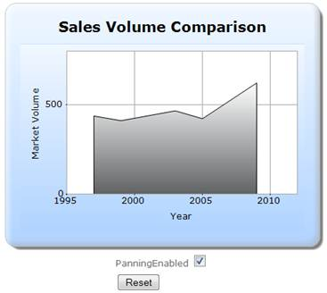
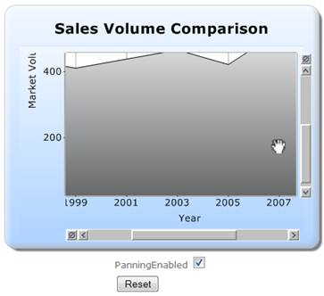

The steps to create a chart with the panning feature through ChartModel are as follows:
Step 1:
Controller:
Add the code displayed below in the HomeController.cs file.
using System;
using System.Collections.Generic;
using System.Linq;
using System.Web;
using System.Web.Mvc;
using Syncfusion.Mvc.Shared;
using Syncfusion.Mvc.Chart;
using Syncfusion.Windows.Forms.Chart;
using Syncfusion.Drawing;
using System.Drawing;
namespace Sample.Controllers
{
[HandleError]
public class HomeController : Controller
{
bool PanningEnabled = true;
public ActionResult Index()
{
MVCChartModel chartModel = new MVCChartModel();
InitializeChart(chartModel);
CustomizeChartAppearance(chartModel);
ViewData["ChartModel"] = chartModel;
return View();
}
[AcceptVerbs(HttpVerbs.Post)]
public ActionResult Index(MVCChartModel chartModel, ChartParams param, bool EnablePanning)
{
PanningEnabled = EnablePanning;
InitializeChart(chartModel);
CustomizeChartAppearance(chartModel);
ViewData["ChartModel"] = chartModel;
if(param.ChartAction== ChartHtmlAction.RegionZoom)
return chartModel.ChartActionResult(param);
else
return PartialView("PartialView", this.ViewData);
}
/// <summary>
/// Initializes the chart data and enables zooming.
/// </summary>
/// <param name="chartModel">The chart model.</param>
protected void InitializeChart(MVCChartModel chartModel)
{
chartModel.Series.Clear();
chartModel.Size = new Size(450, 350);
//Enabling X-Axis and Y-Axis Zooming
chartModel.EnableXZooming = true;
chartModel.EnableYZooming = true;
//Enabling Panning
if (PanningEnabled)
{
chartModel.PrimaryXAxis.ZoomActions = ChartZoomingAction.Panning;
chartModel.PrimaryYAxis.ZoomActions = ChartZoomingAction.Panning;
}
//Creating Chart series
ChartSeries series;
series = new ChartSeries("Saab", ChartSeriesType.Area);
series.Text = series.Name;
//Adding Chart Series Points
series.Points.Add(1997, 437);
series.Points.Add(1999, 411);
series.Points.Add(2003, 466);
series.Points.Add(2005, 422);
series.Points.Add(2009, 622);
//Adding the chart series in the chart model
chartModel.Series.Add(series);
chartModel.PrimaryYAxis.GridLineType.ForeColor = Color.DarkGray;
chartModel.PrimaryXAxis.LineType.ForeColor = Color.DarkGray;
//Specifying the chart x-axis and y-axis titles
chartModel.PrimaryXAxis.Title = " Year ";
chartModel.PrimaryYAxis.Title = "Market Volume ";
//Adding title for the chart
chartModel.Text = "Sales Volume Comparison";
chartModel.Font = new Font("Verdana", 12, FontStyle.Bold);
//Setting the maximum and minimum range values for x-axis and y-axis
chartModel.PrimaryYAxis.Range = new MinMaxInfo(0, 800, 500);
chartModel.PrimaryXAxis.Range = new MinMaxInfo(1995, 2012, 5);
}
/// <summary>
/// Customizing the chart appearance
/// </summary>
/// <param name="chartModel">The chart model.</param>
private void CustomizeChartAppearance(MVCChartModel chartModel)
{
//Setting the border appearance
chartModel.BorderAppearance.SkinStyle = ChartBorderSkinStyle.Emboss;
//Setting the skins
chartModel.Skins = ChartModelSkins.Office2007Blue;
//Setting the series skins
chartModel.ChartSeriesSkins = ChartSeriesSkins.GrayScale;
}
}
}
Step 2:
View:
Add the code displayed below in the Index.aspx file.
View [ASPX]
<%@ Page Language="C#" MasterPageFile="~/Views/Shared/Site.Master" Inherits="System.Web.Mvc.ViewPage" %>
<asp:Content ID="Content1" ContentPlaceHolderID="TitleContent" runat="server">
Chart Zooming
</asp:Content>
<asp:Content ID="Content2" ContentPlaceHolderID="MainContent" runat="server">
<%--Rendering the Chart Control through partial view--%>
<div id="Chart">
<%Html.RenderPartial("PartialView", this.ViewData); %>
</div>
<%using (Ajax.BeginFormExt("Index", new AjaxOptions() { UpdateTargetId = "Chart"}))
{ %>
<%=Html.CheckBox("EnablePanning", true)%>
<input type="submit" value="Reset" />
<%} %>
</asp:Content>
View[cshtml]
@{
Layout="~/Views/Shared/_Layout.cshtml";
ViewBag.Title=” Chart Zooming”;
}
<div>
<%--Rendering the Chart Control through partial view--*@
<div id="Chart">
@Html.RenderPartial("PartialView", this.ViewData)
</div>
@using (Ajax.BeginFormExt("Index", new AjaxOptions() { UpdateTargetId = "Chart"}))
{
@Html.CheckBox("EnablePanning", true)
<input type="submit" value="Reset" />
}
</div>
Step 3:
PartialView:
Create a Partial View named “PartialView.ascx”, and add the code displayed below in it.
View [ASPX]
<%@ Control Language="C#" Inherits="System.Web.Mvc.ViewUserControl" %>
<%--Rendering the Chart Control--%>
<%=Html.Chart("chart_Model",(MVCChartModel)ViewData["ChartModel"])%>
View [cshtml]
@*--Rendering the Chart Control--*@
@(new HtmlString (Html.Chart("chart_Model",(MVCChartModel)ViewData["ChartModel"]).ToString()))
Step 4:
Run the code, to get the following output:

Figure 322: Before Zooming

Figure 323: After Zooming - Panning Enabled
 Note: In this sample, to enable and disable
panning, check and uncheck the PanningEnabled checkbox respectively, click
Reset, to reset the chart, and zoom by selecting the area inside the
chart.
Note: In this sample, to enable and disable
panning, check and uncheck the PanningEnabled checkbox respectively, click
Reset, to reset the chart, and zoom by selecting the area inside the
chart.